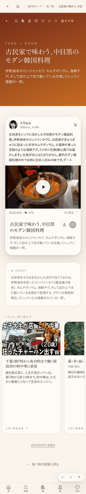
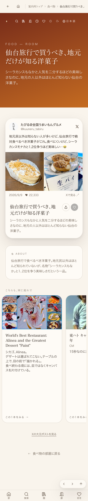
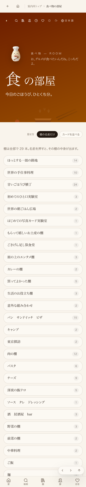
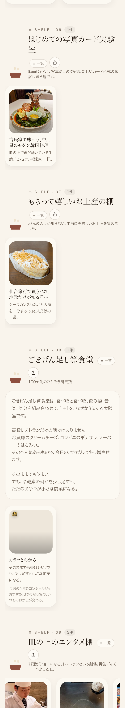

← 進捗表に戻る
共有資料の一覧
／ 確認ページ #734 734番: 写真(静止画)カードを食べ物棚へ入れる実験
#734 734番: 写真(静止画)カードを食べ物棚へ入れる実験
2026-09-11 実装・main合流・本番(GitHub Pages)反映まで実測確認
Xの写真投稿2件を食べ物棚のカードとして追加。①動画+写真3枚の投稿→実装では動画が優先され写真3枚は非表示（16:9枠に動画のみ）②写真2枚のみの投稿→2枚並びのグリッドで表示。両カードとも『Xの大元ポストを見る』リンクが機能。新設棚は『はじめての写真カード実験室』『もらって嬉しいお土産の棚』の2つ。
② 数字
2件
追加した写真カード
4枚
撮影したスクリーンショット
③ 実データでのスクリーンショット
①中目黒カード詳細ページ(動画優先・写真3枚は非表示)

②仙台みやげカード詳細ページ(写真2枚グリッド表示)

食べ物ワールド一覧(グリッド/棚の名前だけ表示。新設2棚が29本中に登場)

食べ物ワールド棚表示(横並び/カードを並べる表示。新設2棚とも実物が並ぶ)

④ 押せるリンク
①中目黒カード(動画+写真3枚→動画のみ表示)
https://joy-relief-station.lovable.app/room/food/nakameguro-korean-kominka
②仙台みやげカード(写真2枚グリッド表示)
https://joy-relief-station.lovable.app/room/food/sendai-miyage-okashi
食べ物ワールド一覧(棚選択)
https://joy-relief-station.lovable.app/world/food
⑤ 何をどう確かめたか
確認項目
結果
①動画+写真3枚の投稿→元投稿へ飛べるか
Xの大元ポストを見るリンクあり・動作確認
②写真2枚のみの投稿→元投稿へ飛べるか
Xの大元ポストを見るリンクあり・動作確認
16:9枠に収まっているか(黒帯OK)
両カードともaspect-video枠内
①の写真3枚は表示されるか
されない。実装は動画優先で写真は非表示(要判断)
← 進捗表に戻る